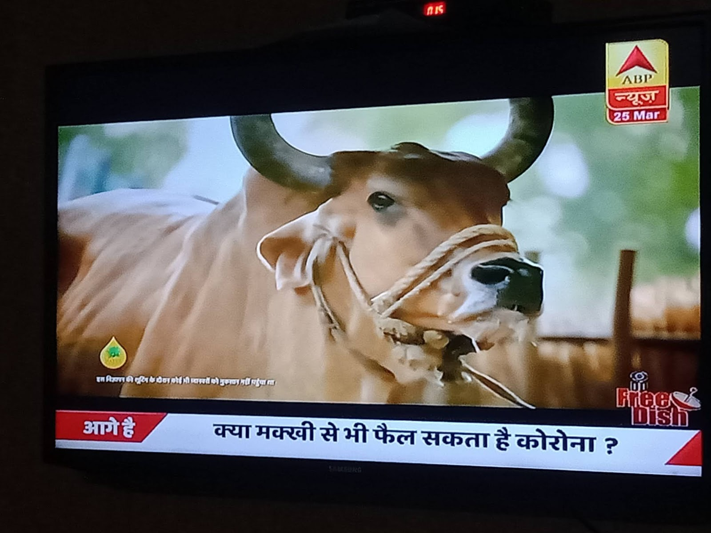
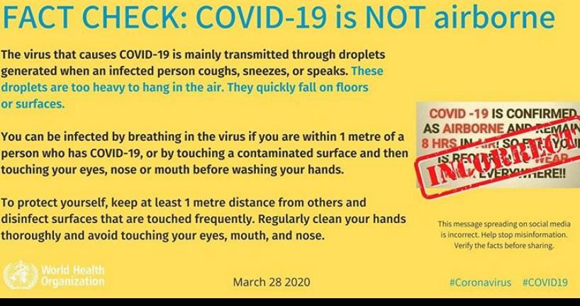

–Updated with WHO Myth Busters on 6th June 2020 This blog post as well has been co-authored with Dr. Mahesh Kolli.
From the time the COVID-19 pandemic has took its exponential pattern. COVID has become a portion of our daily life. Usually Netizens play a major role with their views and voices to bridge the gap between the government and people
So our reactions and their voices are valued because they represent a part of democratic world. However, because of various knee-jerk reactions that we take; the wrongs facts and myths and unnecessary ones become trending and get imbibed in our mind.
According Newton’s third law is: For every action, there is an equal and opposite reaction so according to every view we post there will be a portion who agree and disagree. For example, certain people still want to continue the CAA protests; or the guest workers in Kerala seeing the images of migrants want to flee to their own place of origin looking at the images on social media or on TV . Being uninformed or spreading messages that we consciously feel will alter the phase of the pandemic is only doing the opposite. So the messages or images or forwards we share can change lives or make superstition stronger. At this time its safer to choose science over superstition and Common Sense over Herd Sense approach as we all will be affected equally.
One such whatsapp forward that came to us
Dear All,
Temperature playing a big role….*
| Country | Temp | Affected |
| China | 13 C | 81218 |
| Italy | 10 C | 74386 |
| USA | 9 C | 61081 |
| Spai | 16 C | 47610 |
| Iran | 12 C | 27017 |
| Germany | 7 C | 37098 |
| India | 32 C | 650 |
So guys please limit/stop the use of Air Conditioners at home.
It is a famous Analytics Concept of Correlation vis-a-vis Causation. Also, to underline the fact the total number of cases in Saudi has crossed more than 1000. Added to it, less number of reported cases may be we tested less. So, do not make these type of myths a trending and keep on forwarding in the groups without a fact check. { Also, there is a neat interview in which is in agreement with the whatsapp forward. Link . Who would like to believe that high temperatures may reduce the viral infection rate}
Few Other Fake Related Ones:




In view of public interest and fact news WHO has published the myth busters


.tmb-1920v.png?sfvrsn=a8b9e94_1)


.tmb-1920v.png?sfvrsn=a1aa01b1_1)
.tmb-1920v.png?sfvrsn=86f79761_1)
.tmb-1920v.png?sfvrsn=afa995ff_1)
Also, note that the traditional medicines have not shown any evidence in terms of being effective. So, do not kindly believe and develop false hopes on the same lines.
However, the traditional practices of ours that would help us in long term:
Namaste
Washing Hands and Legs with Soap before Entering the house. { Now, in Apartments can be done once we enter the same }
Bathing every day with Soap. Twice a Day, { Vedas Says - Snana Moola Kriya: Sarvaa }
Washing Hands and Legs with Soap. Before and after the Food.
Washing Hands and Legs with Soap. Before and after using the washrooms.
Cleaning the teeth with Neem Twigs or ToothPaste.
Gargling with Salt Water in case of sore throat and in-hale of steam to alleviate the cold symptoms.
To Conclude:
Request to fo through a similar article shared in HBR Review on the same lines. Link
It is our responsibility as a collective team to disseminate the data and information properly under all scenarios.
Indian Government has taken very bold and great steps to contain the spread. We have to abide by the rules and help each other under this pandemic scenario. { It is easy to be an ArmChair Critic upon Government. However, let us do our best in the respective zones and capacity to help on the same lines }
Seeing all the trends and measures. Corona will soon be gone from the world. It is just a matter of time.
On the same lines, hope Netizens will represent the Nation and trend the facts instead of rumours and be positive and not on false positive side.
Note:
I got into a mode of ArmChair Critic when every Netizen is posting the screenshot of the money they funded into PMs Relief Fund. [ As why PM is not saying now that he will use the black money to uplift the economy.]. However, i felt it is difficult to perform in actions; I feel one has to become a 1 Day PM to understand his pressure and difficulties they face. Nonetheless, I became a Good Samaritan by doing my bit in respective Relief Funds.